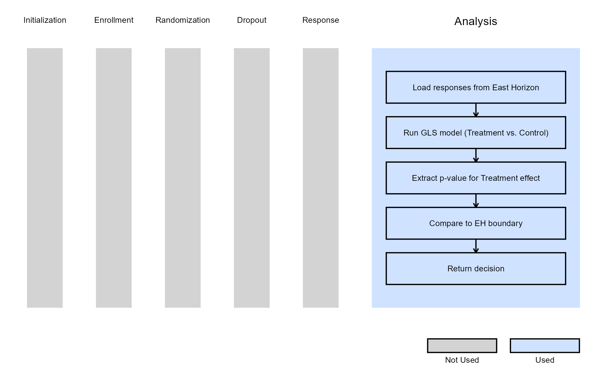

2-Arm, Continuous Outcome, Repeated Measures - Analysis
Gabriel Potvin and Anoop Singh Rawat
February 16, 2026
2ArmNormalRepeatedMeasuresAnalysis.RmdThis example is related to the Integration Point: Analysis - Continuous Outcome with Repeated Measures. Click the link for setup instructions, variable details, and additional information about this integration point.
- Study objective: Two Arm Confirmatory
- Number of endpoints: Single Endpoint
- Endpoint type: Continuous Outcome with Repeated Measures
- Task: Explore
Note: This example is compatible with both Fixed Sample and Group Sequential statistical designs. The R code automatically detects whether interim look information (LookInfo) is available and adjusts the analysis parameters accordingly.
Introduction
Repeated measures analyses are used when multiple observations of the same endpoint are collected from each subject over time. This design provides insights into how responses evolve across visits and allows for within-subject correlation modeling.
In this example, we demonstrate how to integrate a custom repeated-measures analysis into East Horizon through R integration. The example focuses on a two-arm (treatment vs. control) continuous outcome trial.
In the R directory of this example you will find the following R file:
- Analyze.RepeatedMeasures.R - The R function named Analyze.RepeatedMeasures in the file is used to perform repeated measures analysis as described in Example 1 below.
Example 1 - Continuous Endpoint
This example is related to this R file: Analyze.RepeatedMeasures.R
This example demonstrates how to analyze a continuous repeated-measures endpoint within a two-arm clinical trial.
The preceding data generation step returns a list containing one
response variable per visit: Response1,
Response2, etc., each stored as a numeric vector. These
responses are both outputs of the data generation step and inputs to the
current analysis step. They can be accessed using the
SimData object (a list-like data frame) via the $ operator,
for example: SimData$Response1,
SimData$Response2, etc.
The analysis is performed using the nlme::gls() model,
which accounts for within-subject correlations across repeated visits
and compares treatment effects using the model’s estimated parameters.
The analysis automatically adapts for interim or final looks depending
on the availability of LookInfo. As in other analysis
integration examples, the decision logic uses helper functions
(GetDecisionString() and GetDecision()) to
determine whether efficacy or futility boundaries were crossed based on
the computed test statistic.
The figure below illustrates where this example fits within the R integration points of Cytel products, accompanied by a flowchart outlining the general steps performed by the R code.
